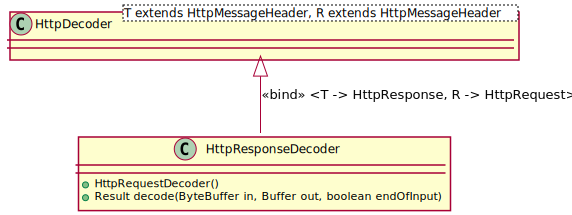

public class HttpResponseDecoder extends HttpDecoder<HttpResponse,HttpRequest> implements ResponseDecoder<HttpResponse,HttpRequest>
A decoder for HTTP reponses that accepts data from a sequence of
ByteBuffers and decodes them into HttpResponses
and their (optional) payload.

The decoder converts a Retry-After header with a delay value to
a header with a date by adding the span to the time in the Date header.
| Modifier and Type | Class and Description |
|---|---|
static class |
HttpResponseDecoder.Result
The result from encoding a response.
|
HttpDecoder.BodyModeCodec.ProtocolSwitchResultHTTP_VERSION, protocolVersion, SPmessageHeader| Constructor and Description |
|---|
HttpResponseDecoder() |
| Modifier and Type | Method and Description |
|---|---|
HttpResponseDecoder.Result |
decode(ByteBuffer in,
Buffer out,
boolean endOfInput)
Decodes the next chunk of data.
|
void |
decodeResponseTo(HttpRequest request)
Starts decoding a new response to a given request.
|
Class<HttpResponse> |
decoding()
Returns the type of the messages decoded by this decoder.
|
protected HttpDecoder.BodyMode |
headerReceived(HttpResponse message)
Informs the derived class that the header has been received completely.
|
protected HttpResponse |
newMessage(String startLine)
Checks whether the first line of a message is a valid response.
|
protected HttpResponseDecoder.Result.Factory |
resultFactory()
Returns the result factory for this codec.
|
header, isClosed, maxHeaderLength, setMaxHeaderLengthbodyCharsetpublic HttpResponseDecoder()
protected HttpResponseDecoder.Result.Factory resultFactory()
HttpDecoderReturns the result factory for this codec.
resultFactory in class HttpDecoder<HttpResponse,HttpRequest>public Class<HttpResponse> decoding()
DecoderReturns the type of the messages decoded by this decoder.
decoding in interface Decoder<HttpResponse,HttpRequest>public void decodeResponseTo(HttpRequest request)
Starts decoding a new response to a given request. Specifying the request is necessary because the existence of a body cannot be derived by looking at the header only. It depends on the kind of request made. Must be called before the response is decoded.
decodeResponseTo in interface ResponseDecoder<HttpResponse,HttpRequest>request - the requestpublic HttpResponseDecoder.Result decode(ByteBuffer in, Buffer out, boolean endOfInput) throws HttpProtocolException
HttpDecoderDecodes the next chunk of data.
decode in interface Decoder<HttpResponse,HttpRequest>decode in class HttpDecoder<HttpResponse,HttpRequest>in - holds the data to be decodedout - gets the body data (if any) written to itendOfInput - true if there is no input left beyond the data
currently in the in buffer (indicates end of body or
no body at all)HttpProtocolException - if the message violates the HTTPprotected HttpResponse newMessage(String startLine) throws HttpProtocolException
Checks whether the first line of a message is a valid response. If so, create a new response message object with basic information, else throw an exception.
Called by the base class when a first line is received.
newMessage in class HttpDecoder<HttpResponse,HttpRequest>startLine - the first lineHttpProtocolException - if the line is not a correct request lineprotected HttpDecoder.BodyMode headerReceived(HttpResponse message) throws HttpProtocolException
HttpDecoderInforms the derived class that the header has been received completely.
headerReceived in class HttpDecoder<HttpResponse,HttpRequest>message - the messageHttpProtocolException - if the input violates the HTTP